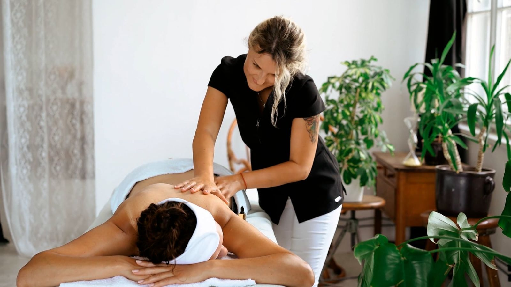
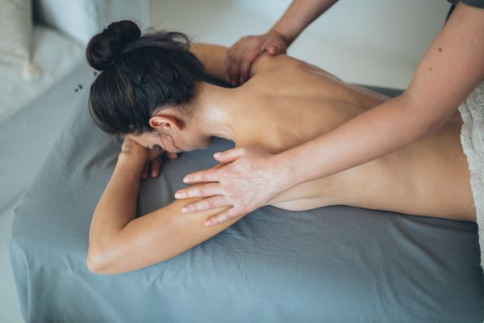

Therapies and shop at White Willow Massage Therapy
Therapeutic massage and an Emporium shop in Lexington.
Deep tissue
Deep tissue massage, offered at the Lexington studio.
Swedish
Swedish massage, offered at the Lexington studio.
Aromatherapy
Aromatherapy massage, offered at the Lexington studio.
Shamanic bodywork
Shamanic bodywork, offered at the Lexington studio.
Ashiatsu
Ashiatsu, offered at the Lexington studio.
Hot stones
Hot stones massage, offered at the Lexington studio.
Reiki energy healing
Reiki energy healing, offered at the Lexington studio.
Fire cupping
Fire cupping, offered at the Lexington studio.
Craniosacral therapy
Craniosacral therapy, offered at the Lexington studio.
Emporium shop
The Emporium shop: crystals, tarot and oracle cards, handmade jewelry, smudge tools, aromatherapy, and candles.
Herbal wellness consultations
Herbal wellness consultations, covering salves, teas, and tinctures.
Gallery



All gallery photos are stock photos, labeled as such. They show the kind of work and setting described on this page, not this business.
Contact
Call (859) 523-8007 Email whitewillowlex@gmail.com
White Willow Massage Therapy serves Lexington, KY. Questions? Call (859) 523-8007.